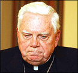

- Title Page
- Introducción
- Boston Globe— una breve historia
- Baron: Un nuevo rostro
- Nace una investigación
- El Equipo Spotlight
- El escenario nacional
- La “ciudad más católica”
- El Cardenal Law
- El Diario y el Cardenal
- El Globe y los católicos de Boston
- El caso del padre Geoghan
- Comenzar a escarbar
- Organizar los archivos
- Crece la base de datos
- Cuando la historia se torna personal
- Reportear tu cultura
- Potencial reacción
- Rezendes recibe una pista
- ¿Publicar o hacer una pausa?
El Cardenal Law

El cardenal Bernard Law
© Boston Globe
En 1984, el Obispo Bernard Law se convirtió en el arzobispo de Boston. Reemplazó al Cardenal Humberto Medeiros, quien había alejado a los fieles católicos al apoyar un programa de transporte escolar para obligar a la integración racial en las escuelas. A diferencia de O’Connell y Cushing, ambos católicos irlandeses de Massachusetts, Medeiros, de origen portugués, no era un héroe en las comunidades obreras.
Law, en cambio, “cautivó a los líderes de la iglesia y entusiasmó a los laicos durante una semana inaugural de esperanza y celebración,” escribió el Globe.[12]Algunos encontraron que el carismático católico irlandés con lazos con Boston – se había graduado de Harvard – era aún más impresionante que el legendario Cardenal Cushing. Paul White, antiguo editor del periódico de la Arquidiócesis, escribió que “[a]mbos tienen fuerza, pero veo en el Arzobispo Law el encanto y personalidad y claridad y apertura que no vi en el Cardenal Cushing.”[13]En 1985, Law viajó a Roma para ser promovido al rango de cardenal. Esta era una época relativamente buena para la iglesia, dirigida por un papa joven y poderoso. El optimismo que permeaba la iglesia era evidente en las declaraciones de Law durante la ceremonia de juramento: “Este es el momento más fuerte de la iglesia desde la Reforma.”[14]
Law era conocido por su rígida adherencia a las enseñanzas de la iglesia y por su tradicionalismo respecto de temas sociales como el aborto, que calificó de “oscuridad primordial de nuestros tiempos”. Estuvo en los titulares de diarios por haberle prohibido a una niña con alergia al trigo usar una galleta de arroz durante la comunión. A Law y otro tradicionalista, el Cardenal John Joseph O’Connor, de Nueva York (también designado en 1984) se les conocía como “Ley y Orden”.
Ambicioso y cómodo tanto en el sur de Boston como en Roma, un conservador en una época conservadora, Law se convirtió en un líder nacional. Se hizo amigo del Presidente George H.W. Bush, con quien conversaba todos los meses, y su jefe de gabinete, John Sununu, con quien se reunía semanalmente. Su poder era tal que a veces se le mencionaba como el posible sucesor del Papa Juan Pablo II, pero el papado, dijo el Globe, difícilmente sería otorgado a un estadounidense, especialmente uno tan cercano a un presidente: “Si elegimos al Papa Bernard, sus críticos podrían alegar, nadie sabría si estaba hablando en representación de la iglesia o del Partido Republicano.”[15]
Aunque sus relaciones con personajes nacionales eran fuertes, el Cardenal Law no tenía una relación tan cordial con el Globe.
[12] Equipo de Investigación del Boston Globe, Betrayal. (Little Brown, 2002), p.33.
[13] Equipo de Investigación del Boston Globe, Betrayal. p.34.
[14] Jack Thomas, “Crisis in the Church; Scandal Darkens a Bright Career.” Boston Globe, 14 abril de 2002.
[15] Daniel Golden, “The Cardinal’s Ambitions; Does Cardinal Bernard Law Serve the Pope or the President? Is He Prelate or Politician—or Both?” Boston Globe, 22 de abril de 1990.